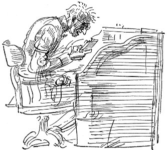

Amerika Birleşik Devletleri hükümeti, hangi yanı tutuyor olurlarsa olsunlar bu ayaklanmada yer aldıkları için tutuklanan Amerikan yurttaşlarının, uluslararası yasaların geniş ilkeleriyle yargılanmaları gerektiği konusunda ısrar etmeli, bunu istemelidir
kongre'yi askerler korudu
Titanic 10 Nisan'da Southampton'dan ilk seferine çıktı “Kimmel'e” göre New York Hayatı Dergisi'nin isteklerine karşın operasyon yapılmalıdır Neden ama biliyor benim Nil'de Kimmel diye tanındığımı herkes için ben George'um sokakta karşılaştığımızda annemle kız kardeşim bile bana böyle der
Ben gidiyorum Maksim'e
Neşenin eğlencenin parıldadığı yere
Tüm kızlarla çene çalacağım
Güleceğim öpeceğim oynaşacağım
Lolo, Dodo, Joujou
Cloclo, Margot, Froufrou
dünyanın en büyük gemisi tıtanıc batıyor
ben kişisel olarak on iki saatlik işgününün işçiler için kötü olduğunu sanmıyorum özellikle de onlar daha çok kazanmak için böylesine uzun süre çalışmakta direniyorlarsa
Yine de olacak şarkımın tümü
Daha yakın Tanrım sana
Daha yakın sana
mehtapsız, pırıl pırıl yıldızlarla aydınlanmış bir gecenin aşağı yukarı saat biriydi. Deniz havuz gibi durgundu, yalnız kabardıkça gemi aşağı yukarı inip çıkıyordu, buz gibi soğuk dışında olağanüstü güzellikte bir geceydi. Uzaklarda koskoca gövdesi, yıldızlı gökyüzüne karşı siyah çizgilerle belirlenmiş, tüm salonları, kamara pencereleri ışık içinde, dev gibi bir görünümü vardı Titanic'in.
metodistler tanrı'yı üç ayrı kişi olarak
görenlerin kovulmasını istedi
gelinlik, beli şifon üzerine dantel, ipek satendendi. Duvak kenarları işlemeli kreptendi alışılmış duvaklardan farklıydı, elindeki buket inciçiçeklerinden ve gardenyalardan oluşmuştu.
Lolo, Dodo, Joujou
Cloclo, Margot, Froufrou.
Ben gidiyorum Maksim'e
Gelebilirsin sen de
Titanic'in kıçı dimdik havaya kalkıp ağır ağır öteki ucundan batmaya başladı ve bunlar olurken kalktığımızdan beri bir an bile titreşmemiş olan salonlardaki ve kamaralardaki ışıklar söndü, sonra bir an yine parlayıp tümden söndü. Bu arada makineler geminin içinde millerce öteden duyulabilecek gümbürtüyle takırdıyordu. Sonra usulca yana yatıp batarak
Janey
Çalışmak zorunda kaldığı için annesi sızlandığında, Janey, “Ama çalışmak çok ilginç Anne,” derdi.
“Benim zamanımda, incelikli bir hanıma yakışmazdı, alçaltıcı bir şey olarak düşünülürdü.”
Janey, öfkelenmeye başlayarak, “Ama şimdi öyle değil,” derdi.
Sonra havasız evden, Georgetown'ın havasız, ağaçlarla gölgeli sokaklarından çıktığında, Alice Dick'i alıp kente inince, sinemaya gidince, yabancı ülkelerle ilgili filmleri, F. Caddesi'nin kalabalığını görünce içi açılırdı; sonra gazoz içmek için bir dükkânda durduklarında, Georgetown otobüsüne binmeden önce çeşme başında oturup gördükleri filmden, Olive Thomas'tan, Charlie Chaplin'den, John Bunny'den konuşurlarken rahatlardı. Her gün gazete okuyup politikayla ilgilenmeye başlamıştı. Dışarılarda bir yerlerde koskoca, nabız gibi atan, ark lambalarıyla aydınlanmış bir dünya bulunduğunu, her şeyin çok can sıkıcı, çağdışı olduğu Georgetown'da yaşamanın, anasıyla babasının böyle can sıkıcı, çağdışı olmalarının, kendisinin o dünyaya girmesini engellediğini duyuyordu.
Joe'dan gelen kartpostallar da onda bu duyguları uyandırıyordu. Connecticut savaş gemisinde denizciydi. Ya Havana'da deniz kıyısının ya Marsilya Limanı'nın ya Villefranche'in resmini yollardı, süslemeli at nalının ortasında durmuş köylü giysileri içinde bir kız resmi de olabilirdi bu, Janey'in iyi olduğunu, işini sevdiğini umduğunu söyleyen birkaç sözcük yazardı, ama kendisiyle ilgili hiçbir şey anlatmazdı. Janey kendisiyle, yabancı ülkelerle ilgili sorularla dolu uzun mektuplar yazmasına karşın hiçbir zaman yanıt alamazdı bunlara. Yine de bu kartpostalları almak onda serüven duygusu uyandırırdı. Ne zaman sokakta bir denizci ya da Quantico'dan bahriyeliler görse Joe'yu düşünür, nasıl olduğunu merak ederdi. Şapkası yana eğilmiş, maviler içinde bahriyelinin sendeleyerek yürüyen görüntüsü yüreğini hoplatırdı.
Pazar günleri, hemen hemen her zaman Georgetown'a gelirdi Alice. Ev şimdi çok değişikti, Joe gitmiş, anasıyla babası yaşlanmış, sessizleşmişti. Francie'yle Ellen büyüyüp çok güzel, fıkır fıkır liseli kızlar olmuşlardı, çevredeki delikanlılar arasında çok beğeniliyor, danslı toplantılara gidiyor, harcayacak paraları olmadığından yakınıp duruyorlardı. Onlarla masada otururken, anneye salçayı hazırlamasında yardım ederken, patatesleri, brüksellahanalarını getirirken kendini büyümüş, neredeyse yaşlı bir kız olmuş gibi hissederdi. Şimdi kız kardeşlerine karşı anasıyla babasının yanını tutuyordu. Babası yaşlanmış, küçülmüş görünüyordu. Sık sık işten ayrılmaktan söz ediyor, dört gözle emekli aylığı alacağı günleri bekliyordu.
Mrs. Robinson'la çalışmaya başladığının sekizinci ayında, Riggs Binaları'nın en üst katında bulunan ve patent işleriyle uğraşan Dreyfus ve Carroll Avukatlık Bürosu'ndan haftada on yedi buçuk dolara kendileriyle çalışma önerisi aldı. Bu, Mrs. Robinson'dan aldığından beş dolar fazlaydı. Büyük mutluluk duydu, işini çok başarılı biçimde yaptığını, ne olursa olsun başının çaresine bakabileceğini anladı. Bunun verdiği güçle, Woodward ve Lothrop Mağazası'na gidip kendine giysi almak istedi. Üzerinde işlemeleri olan ipekli bir giysi istiyordu. Yirmi bir yaşındaydı, haftada on yedi dolar kazanıyordu, bir tek güzel giysiyi hak ettiğini düşünüyordu. Alice saçının rengine uyması için giysinin bronza çalan altın rengi olması gerektiğini söylüyordu. F. Caddesi'ndeki dükkânlara girip çıktılar, ama ona yakışan, çok da pahalı olmayan hiçbir şey bulamadılar. Bu yüzden de biraz kumaşla birkaç model alıp dikmesi için eve, Janey'in annesine götürdüler. Annesine hâlâ böyle bağımlı olmak canını sıktı, ama yapacak başka şey de yoktu. Böylece de Mrs. Williams, doğdukları günden beri tüm çocuklarına yaptığı gibi Janey'in yeni giysisini de dikmek zorunda kaldı. Janey, hiçbir zaman annesi gibi dikiş dikmeyi öğrenecek sabrı göstermemişti. Alice'e de giysi çıkacak kadar kumaş almışlardı, bu yüzden Mrs. Williams'ın iki giysi dikmesi gerekiyordu.
Dreyfus ve Carroll'la çalışmak, Mrs. Robinson'la çalışmaktan oldukça değişikti. Orada çalışanların çoğu erkekti. Mr. Dreyfus ufak tefek, ince yüzlü, küçük siyah bıyıklı, minik siyah kırpışık gözlü, vurgulu konuşma biçimiyle kendine tanınmış bir yabancı diplomat havası veren bir adamdı. Sarı, kokulu eldivenleri, sarı bastonu, iyi bir terzinin diktiği, yığınla paltosu vardı. Jerry Burnham'ın dediğine göre firmanın beyni oydu. Mr. Carroll, iriyarı, kırmızı yüzlü, durmadan pipo içip boğazını temizleyen, çok eski zamanlara özgü Güneyli, Tanrı günahlarımı bağışlasın türünden konuşma biçimi olan biriydi. Jerry Burnham onun firmanın temel taşı olduğunu söylüyordu. Jerry Burnham buruşuk yüzlü, ayyaş bakışlı, işyerinin teknik ve mühendislik konularında danışmanlığını yapan delikanlıydı. Durmadan güler, her zaman işe geç gelir, nedense Janey' den hoşlanır, ona bir şeyler yazdırırken şakalar yapardı. Gözlerindeki ayyaş bakıştan biraz ürkmesine karşın, Janey ondan hoşlanıyordu. Kız kardeş gibi onunla konuşup, gücünü böylesine harcamasına engel olmak isterdi. Sonra Mr. Silis adında yaşlı bir muhasebeci vardı. Her yanı buruş buruştu, Anacostia'da oturur, kimseyle konuşmazdı. Öğle olunca, yemek için dışarı çıkmaz, mumlu kâğıda sarılı sandviçle elma yer, kâğıdı yine güzelce katlayıp cebine koyardı. Sonra iki küçük ayak oğlanıyla, haftada on iki dolar alan, solgun yüzlü Mrs. Simonds adında başka bir daktilo kız vardı. Gün boyu her tür ucuz, cafcaflı ya da pahalı, özenli giysileri içinde birçok insan gelip dış odalarda bekler, buzlucamlı kapının arkasından Mr. Carroll'un gür sesle bağırmasını dinlerdi. Mr. Dreyfus, tek söz etmeksizin tanıdıklarına usulca gülümseyerek hep gizemli bir ivecenlik içinde bir dışarı çıkar bir içeri süzülürdü. Yemek zamanı küçük lokantada ya da büfede, Janey, bunları Alice'e anlatır, o da arkadaşına beğeniyle bakardı. Alice hep saat birde girişte beklerdi. Kalabalık azaldığı için o saatte yemeğe çıkıyorlardı. İkisi de, hiçbir zaman yirmi sentten çok harcamak istemediklerinden yemekler uzun sürmüyor, işe dönmeden önce Lafayette Alanı'nda ya da Beyaz Saray çevresinde biraz dolaşacak zamanları kalıyordu.

Bir cumartesi akşamı, pazartesi sabahı ilk iş olarak patent dairesine gönderilmesi gereken, dıştan takma motorun özelliklerini yazmayı bitirmek için geç saatlere kadar çalışmak zorunda kalmıştı. Herkes işyerinden ayrılmıştı. Karmaşık teknik sözcükleri elinden geldiğince düzgün yazmaya çalışıyordu ya, aklı Joe'dan gelen, üzerinde Andes İsası Heykeli'nin resmi bulunan kartpostaldaydı. Yalnızca şunlar yazılıydı kartpostalda.
“Sam Amca'nın teneke gemilerinin canı cehenneme. En kısa zamanda eve dönüyorum.”
İmza yoktu, ama Janey yazıyı tanıyordu. Kaygılandırmıştı bu onu. Burnham telefon masasında oturmuş, yazmayı bitirdiği sayfaları okuyordu. Arada bir dışarı, ellerini yıkamaya gidiyordu. İçeri her girişinde soluğu, soluğundaki sıcak viski kokusu odayı dolduruyordu. Janey sinirliydi. Gözlerinin önünde küçük, kara harfler birbirinin içine girene kadar daktiloda yazdı durdu. Joe için kaygılanıyordu. Gönüllülük süresi bitmeden nasıl eve dönebilirdi? Bir sorun çıkmış olmalıydı. Telefoncu kızın iskemlesinde kıpırdanıp duran Jerry Burnham da onu tedirgin ediyordu. Alice'le birlikte, bir adamla işyerinde yalnız kalmanın tehlikelerinden söz etmişlerdi. Böylesine geç saatte, üstelik içki içen bir adamın, tek düşüncesi olurdu.
Sondan bir önceki sayfayı verdiğinde, Burnham'ın parlak, nemli gözleri kızın gözlerini yakaladı. “Eminim yorgunsunuz, Miss Williams,” dedi. “Sizi burada böylesine tutmak son derece ayıp, hem de cumartesi gecesi.”
Yazmayı sürdürerek, buz gibi bir sesle, “Hiç önemi yok. Mr. Burnham,” dedi.
“Şu yaşlı, baş belası göbeklinin suçu. Gün boyu sürekli politikadan konuştu, kimse iş yapamadı.”
“Şey, hiç önemi yok şimdi,” dedi Janey.
“Artık hiçbir şeyin önemi yok . . . Neredeyse saat sekiz oldu. En sevdiğim kız arkadaşımla buluşamayacağım . . . en sevdiğim ya da öyle bir şey. Sizin de erkek arkadaşınızı atlattığınızdan kuşkum yok, Miss Williams.”
“Yalnızca kız arkadaşımla buluşacaktım, hepsi bu.”
“Ha, haa, şimdi anlaşılıyor . . .” Öylesine rahat güldü ki, Janey de kendini tutamadı.
Son sayfa da yazılıp zarfa konunca şapkasını almak için kalktı Janey. “Bakın Miss Williams, bunu postaya atarız, sonra da en iyisi siz benimle bir şeyler yemeye gelirsiniz.”
Asansörle aşağı inerlerken Janey özür dileyip eve gitmeyi kuruyordu, ama nasıl olduysa yapmadı bunu, içinde tüm duygular kıpır kıpır, soğukkanlılıkla H Caddesi'ndeki Fransız lokantasında Burnham'la oturur buldu kendini.
“Şu Yeni Özgürlük konusunda ne düşünüyorsunuz. Miss Williams?” diye gülerek sordu Burnham oturduklarında. Yemek listesini uzattı. “İşte . . . Vicdanınızın sesini dinleyin.”
“Şey, pek bilmiyorum, Mr. Burnham.”
“Ben bundan yanayım, doğrusu. Bence Wilson büyük adam . . . Dünyada değişiklik gibisi yok, siz öyle düşünmüyor musunuz? Bryan saçma sapan böğüren biri ama o bile bir şeyin sözcüsü, hatta deniz kuvvetlerini salaklarla dolduran Josephus Daniels bile. Sanırım yine demokrasiye dönebilme şansımız var . . . Belki de devrime gerek kalmaz. Siz ne düşünüyorsunuz?”
Hiçbir zaman kızın bir soruyu yanıtlamasını beklemedi, yalnızca konuştu, güldü kendi kendine.
Daha sonra Janey, bu olanları Alice'e anlatmaya çalışınca Jerry Burnham'ın söyledikleri ona hiç de gülünç gelmedi, ne yemek fazla güzeldi ne de her şey eğlenceli. Alice bu işe çok gücenmişti. “Ah, Janey, gecenin o geç saatinde nasıl çıkabildin sarhoş bir adamla, hem de öyle bir yere gitmek üzere, ben de burada kaygıdan aklımı kaçıracaktım . . . Biliyorsun, böyle bir adamın kafasında yalnızca tek düşünce vardır . . . Bak sana söylüyorum, bu yaptığın hafiflikti, kalpsizlikti . . . Senin böyle bir şey yapabileceğini sanmazdım.” “Ama Alice, sandığın gibi değil,” deyip duruyordu Janey ama Alice ağladı, hafta boyu küskün küskün dolaştı. Bu yüzden de Janey, Jerry Burnham konusunu bir daha hiç açmadı. Alice'le ilk anlaşmazlıklarıydı bu, Janey'in canını sıkıyordu.
Yine de Jerry Burnham'la arkadaşlık ediyordu. Janey'i gezmeye götürmekten, kendini ona dinletmekten hoşlanıyordu Burnham. Dreyfus ve Carroll'daki işinden ayrıldıktan sonra bile bazen, cumartesi öğle sonraları onu Keth'in Yeri'ne çağırıyordu. Janey bir keresinde Alice'le Rock Irmağı Parkı'nda karşılaşmalarını sağladı, ama sonuç pek başarılı olmadı. Jerry kızlara eski taş değirmende çay içirdi. Bir mühendislik dergisinde çalışıyor, New York Sun'da haftalık yazılar yazıyordu. Washington'a lağım kuyusu, boğucu bir bataklık dedi, orada çürüdüğünü ve kent halkının çoğunun boyunlarından yukarısının ölmüş olduğunu söyleyerek Alice'i çok kızdırdı. Georgetown'a dönmeleri için onları arabaya bindirince genç Burnham'ın saygın bir kızın tanıştırılacağı kişilerden olmadığını söyledi Alice öfkeyle. Janey, üstü açık vagonda mutluluk içinde oturarak, ağaçlara, yazlık giysiler içindeki kızlara, hasır şapkalı delikanlılara, mektup kutularına, evlerin taş duvarlarına, önlerinden akıp geçen her şeye bakarak, “Ama Alice, zehir gibi akıllı . . . Tanrım, ben kafası işleyenleri severim, sen sevmez misin?” dedi. Alice ona bakıp üzüntüyle başını salladı, hiçbir şey söylemedi.
Aynı gün öğleden sonra hastaneye Baba'yı görmeye gittiler. Çok kötüydü durumu. Anne, Janey, doktorlar, koğuş hemşiresi, mesane kanseri olduğunu, çok yaşayamayacağını biliyorlardı, ama bunu kendi kendilerine bile açıkça söylemekten kaçınıyorlardı. Daha rahat edebileceği özel odaya onu yeni geçirmişlerdi. Bu çok pahalıya patlıyordu, evi ikinci kez ipotek ettirmek zorunda kalmışlardı. Janey'in kötü günler için bankaya yatırdığı birikmiş paralarının tümünü daha şimdiden bitirmişlerdi. O öğleden sonra bir süre beklemeleri gerekti. Havluya sarılı bir şişe idrarla hemşire dışarı çıkınca Janey tek başına içeri girdi.
Zoraki bir gülümsemeyle, “Merhaba, Baba,” dedi. Odadaki dezenfektan kokusu midesini bulandırdı. Açık camdan, güneşin soldurduğu ağaçların yaydığı sıcak hava, uyuşuk pazar öğle sonrasının gürültüleri, bir karganın gaklaması, uzaktan gelen araba sesleri doluyordu içeri. Baba'nın yüzü çökmüş, çarpılmıştı. Koca bıyıkları insanın içini karartan ak, ipeksi bir görünüş almıştı. Janey onun yeryüzünde en çok sevdiği kişi olduğunu biliyordu.
Sesi güçsüz ama oldukça kesindi. “Janey, durumumun umutsuz olduğunu biliyorum, kızım, sanırım hiçbir zaman da . . . sen benden iyi biliyorsun ya, bu orospu çocukları bana söylemiyor . . . Şey, bana Joe'yu anlat. Sen ondan haber alıyorsun, değil mi? Keşke deniz kuvvetlerine girmeseydi, arka çıkacak kimsesi bulunmazsa bir delikanlıya orada gelecek yoktur, ama denizlere açıldığına seviniyorum, bana çekmiş . . . Eskiden, yirmi yaşıma basmadan üç kez Horn Burnu'nu dolaştım. Şu römorkör işine girmeden önceydi, anlıyorsun . . . Şurada yatağa yatmış düşünüyordum. Joe da benim gibi yaptı, hık demiş babasının burnundan düşmüş, buna çok seviniyorum. Onun için kaygılı değilim, ama keşke siz kızlar evlenmiş, benim elimden çıkmış olsaydınız. Daha rahat ederdim. Şimdi şu dizlerinin üzerinde etekler giyen kızlara hiç güvenim yok.” Baba'nın gözleri, güçsüz, buz gibi bir parıltıyla üzerinde dolaştı, konuşmaya çalıştığında, Janey'in boğazı kurumuştu bu yüzden.
“Sanırım ben başımın çaresine bakabilirim,” dedi.
“Şimdi bana da bakmak zorundasın. Siz çocuklar için elimden geleni yaptım: Hiçbiriniz hayatın ne demek olduğunu bilmezsiniz, hep korunmuştunuz, şimdi de beni hastanede öleyim diye bakıma aldınız.”
“Ama Baba, iyi bakılabileceğin bir yere götürülmenin daha iyi olacağını kendin söyledin.”
“Şu gece hemşiresini sevmiyorum, Janey, bana çok kaba davranıyor. Aşağıda yöneticilere söyle.”
Gitme zamanının gelmesi kurtuluştu. Alice'le birlikte konuşmaksızın sokaklarda yürüdüler. Sonunda Janey, “Tanrı aşkına Alice, suratını asma. Bunlardan nasıl nefret ettiğimi bilseydin . . . Ah Tanrım, keşke . . .” dedi.
“Keşke ne Janey?”
“Bilemiyorum.”
O yaz temmuz ayı çok sıcaktı. İşyerinde sürekli vantilatörlerle çalışıyorlar, erkeklerin gömlek yakaları çabucak buruşuyor, kızlar suratlarına kat kat pudra sürüyorlardı. Yalnızca Mr. Dreyfus mukavva kutudan daha yeni çıkmış gibi serin, gıcır gıcır görünüyordu. Ayın son günü Janey, bir dakikalığına masasında oturmuş, sıcaktan kaynayan sokaklardan eve dönecek gücü toplarken Jerry Burnham içeri girdi. Gömleğinin kollarını dirseklerinin üstüne kıvırmış, beyaz pantolon giymiş, ceketini eline almıştı. Babasının nasıl olduğunu sordu, Avrupa'dan gelen haberlerin kendisini çok coşturduğunu, birlikte yemeğe gitmek, yatıştırıcı biriyle konuşmak zorunda olduğunu söyledi. “Bug Dolan'ın arabasını aldım, ehliyetim yok ama otoyola bir girsek serinleyebiliriz de.” Akşam yemeğine evde olması gerektiği, Alice de ne zaman Jerry'yle çıksa surat astığı için hayır demeye çalıştı ama Jerry gerçekte onun gitmek istediğini sezerek üsteledi.
Ford'un ön koltuğuna oturup ceketlerini arkaya attılar. Otoyolda bir tur attılar, ama asfalt kızgın tava gibiydi. Ağaçlarla kahverengi durgun ırmak, öğleden sonra geç saatlerin sıcağında tenceredeki etle sebze gibi kaynıyordu. Motordan gelen ısıda neredeyse boğuluyorlardı. Jerry, yüzü kıpkırmızı, Avrupa'da başlamak üzere olan savaştan, bunun nasıl uygarlığın sonu, genel işçi devriminin başlangıcı olacağından, nasıl hiçbir şeye aldırmadığından, beynini pişiren güneşin de katkısıyla içki içerek kendini aptallaştırdığı Washington'dan uzaklaşmasını sağlayacak herhangi bir şeyin nasıl da nimet olacağından, kendisinden para sızdırmak, eğlencelere götürülmek ya da evlenmek dışında bir şey düşünmeyen kadınlardan nasıl da bıktığından, onlara benzemeyen Janey'le konuşmanın nasıl rahatlatıcı, yatıştırıcı olduğundan söz ediyordu sürekli.
Hava çok sıcaktı, arabayla gezmeyi sonraya bırakıp yemek yemek için Willard'a gittiler. Jerry, ceplerinin para dolu olduğunu, bunları nasılsa harcayacağını söyleyerek Willard'a gitmeleri konusunda diretti. Janey daha önce hiç büyük bir otele gitmediği, oraya uygun biçimde giyinmiş olmadığı için dehşete kapıldı, küçük düşmekten korktuğunu söyledi. Jerry gülerek bunun mümkün olmadığını ileri sürdü. Büyük, uzun, yaldızlı yemek salonunda oturdular, Jerry burasının milyoner morguna benzediğini söyledi, garson çok kibardı, Janey koskoca yemek listesinden ne seçeceğini bir türlü bilemeyip salata istedi. Jerry, serinletici olduğunu söyleyerek ona cinfiz getirtti, içki Janey'in, kendini hafiflemiş, uzun ve sarsak hissetmesine yol açtı. Küçükken Joe ve Alec'in peşinden tramvay depolarına giderken yaptığı gibi soluksuz dinliyordu Jerry'nin konuşmasını.
Yemekten sonra biraz daha arabayla dolaştılar, Jerry çok sessizleşmişti, Janey kendini konuşmaya zorluyor, ama ne diyeceğini bilemiyordu. Rhode Island Caddesi'nde dolaştılar. Eski Muharipler Evi'nin çevresinden geri döndüler. Hiçbir yerde en ufak esinti yoktu, donuk donuk parlayan, birbirinin aynı elektrik ışıkları iki yanlarından akıyor, kıpırtısız, tekdüze ağaçları aydınlatıyordu. Tepelerde bile tek dal oynamıyordu.
Sokak lambalarının ötesindeki karanlık sokaklar daha iyiydi. Janey, nerelere gittiklerini artık ayırt edemiyor, ara sıra bir mısır tarlasından ya da küçük bir korudan gelen serinlik dilimi içinde derin soluklar alarak arkasına yaslanmış oturuyordu. Belirsiz bir bataklık neminin azıcık serinlettiği yerde Jerry arabayı durdurarak eğilip onu öptü. Janey'in yüreği hızla çarpmaya başladı. Yapmamasını söylemek istedi, ama beceremedi.
“Bunu yapmak istemezdim, ama elimde değil,” diye fısıldadı. “Washington'da yaşamak insanın iradesini yok ediyor . . . Ya da belki sana âşığım, Janey. Bilmiyorum . . . Haydi gel arkada oturalım, daha serin orası.”
Midesinden yükselip her yanını saran bir güçsüzlük duydu. Dışarı çıkarken Jerry onu kollarının arasına aldı. Janey, başını onun omzuna yaslayıp dudaklarını boynuna değdirdi. Omuzlarının çevresinde Jerry'nin kolları ateş gibi sıcaktı, gömleğinin altından kaburga kemiklerini hissediyordu. Jerry onu göğsüne bastırırken tütün, içki, erkek teri kokusuyla başı dönmeye başladı. Bacakları onunkileri bastırmaya başlamıştı. Kız kendini geri çekip arka koltuğa oturdu. Titriyordu. Jerry tam arkasındaydı. “Hayır, hayır,” dedi. Jerry kolunu beline dolayarak yanına oturdu. Titreyen bir sesle, “Bir sigara içelim,” dedi.
Elinde sigarayla hiç değilse yapacak bir şeyi vardı, hatta kendini ona daha yakın bile buldu. Sigaralarının benek benek kırmızı uçları yan yana parıldıyordu.
“Benden hoşlandığını mı söylemek istiyorsun, Jerry?”
“Senin için çıldırıyorum, çocuk . . .”
“Yani demek istiyorsun ki . . .”
“Seninle evlenmek mi . . . Ne diye olmasın? Bilmiyorum . . . Tut ki nişanlıyız?”
“Yani seninle evlenmemi istediğini mi söylüyorsun?”
“Sen de istersen . . . Ama bir erkeğin neler hissettiğini anlamıyor musun . . . böyle bir gecede . . . bataklığın kokusu gelirken . . . Tanrım seninle sevişebilmek için her şeyi verirdim.”
Sigaralarını bitirmişlerdi. Tek söz etmeksizin uzun süre oturdular. Kendi çıplak koluna değen onun çıplak kolundaki kılları hissediyordu.
“Kardeşim Joe için üzülüyorum . . . Deniz kuvvetlerinde, Jerry, kaçacağından korkuyorum . . . Sanırım, ondan hoşlanırdın. Müthiş bir beyzbol oyuncusudur.”
“Kardeşin nereden aklına geldi? Benim için de aynı duyguları mı taşıyorsun? Aşk korkunç bir duygudur. Lanet olsun, bunun kardeşine beslediğin duygularla ilgisi olmadığını anlamıyor musun?”
Elini kızın dizine koydu. Janey karanlıkta onun kendisine baktığını hissedebiliyordu. Eğilip usulca kızı öptü. Janey dudaklarının böyle incelikle kendisininkilere değmesinden hoşlandı. O da Jerry'yi öpüyordu. Yüzyılların bataklık gecesine yuvarlanıyordu. Jerry'nin sıcak göğsü, kızın göğüslerini aşağı doğru bastırıyordu. Yüzyılların bataklık gecesine doğru kendisini bastıran erkeğe sarılıp kalabilirdi. Sonra ansızın soğuk bir sancı ve kasılmayla midesi bulandı, boğuluyormuş gibi soluk almaya çalıştı. Bacağını kaldırdı, diziyle Jerry'yi kasığından iteledi.
Jerry bıraktı, arabadan çıktı. Janey arkasındaki karanlıkta bir aşağı bir yukarı dolaştığını duyabiliyordu. Janey titriyordu, korkmuştu, midesi bulanıyordu. Bir süre sonra Jerry arabaya girdi, ışığı yaktı, ona bakmaksızın arabayı sürdü. Sigara içiyordu, araba ilerledikçe sigarasından küçük kıvılcımlar saçılıyordu.
Georgetown'a Williams'ların evinin altındaki M Caddesi'ne gelince arabayı durdurup dışarı çıktı, Janey'e kapıyı açtı. Janey ne diyeceğini bilemeden, ona bakmaya korkarak indi.
“Sanırım küçük bir domuz gibi davrandığım için senden özür dilemem gerektiğini düşünüyorsundur.”
“Jerry, üzgünüm,” dedi.
“Tanrı cezamı versin dilersem . . . Dost olduğumuzu sanmıştım. İçinde insancıl parıltı taşıyan hiçbir kadın olmadığını bilmeliydim bu gübre ininde . . . Galiba düğün çanları çalana dek bu şeyini saklaman gerektiğini düşünüyorsun. Bildiğini yap, bu seni ilgilendirir. Ben istediğimi şuradaki herhangi bir zenci orospudan alabilirim . . . İyi geceler.” Janey hiçbir şey söylemedi. Jerry arabasıyla uzaklaştı. Janey eve gidip yattı.
Bütün o ağustos ayı boyunca babası Georgetown Hastanesi'nde morfinle dopdolu can çekişti. Her gün gazeteler Avrupa'daki, Liege, Louvain, Mons'taki savaş haberlerini veren büyük başlıklarla çıkıyordu. Dreyfus ve Carroll'da göze çarpan bir telaş vardı. Savaş gereçlerinin patentleri konusunda büyük davalar sürüyordu. Kusursuz Mr. Dreyfus'un Alman hükümetinin ajanı olduğu konusunda dedikodular dolaşıyordu. Bir öğleüzeri Jerry, Janey'i görmeye gelip o gece yaptığı kabalıktan ötürü özür diledi, savaş yazarı olarak iş bulduğunu, bir hafta içinde cepheye gideceğini söyledi. Birlikte güzel bir öğle yemeği yediler. Casuslardan, İngilizlerin çevirdiği dolaplardan, Panislavizm'den, Juarez'in öldürülmesinden, sosyalist devrimden konuştu, boyuna güldü, her şeyin cehenneme dönüşmekte olduğunu söyledi. Janey onun harika olduğunu düşünüyor, nişanlanmaları konusunda bir şeyler söylemek istiyor, ona karşı kendini çok yumuşak hissediyor, öldürüleceğinden korkuyordu, ama ansızın işyerine dönme zamanı geldi ve ikisi de konuyu açmamışlardı. Jerry, onunla birlikte Riggs Binaları'na yürüdü, “Hoşça kal,” diyerek orada herkesin gözleri önünde onu uzun uzun öptü, New York'tan yazacağına söz vererek koşup uzaklaştı. Tam o anda yukarı Mrs. Robinson'a gitmekte olan Alice'le karşılaştılar ve Janey kendini, Jerry Burnham'la evlenmek üzere nişanlandığını, şimdi onun savaş muhabiri olarak Avrupa'ya gittiğini anlatırken buldu.
Eylül ayında Baba'nın ölümü bu işle ilgili herkes için büyük rahatlık oldu. Yalnızca Oak Hill Mezarlığı'ndan döndükleri sıra küçük bir kızken istediklerinin tümü aklına geldi, Alec'i düşündü, her şey dayanamayacağı kadar mutsuz göründü gözüne. Anne çok sessizdi, gözleri kıpkırmızıydı, Oak Hill'de kendisinin de gömülebileceği bir yer bulunduğu için çok mutluluk duyduğunu söyleyip durdu. Baba'nın Oak Hill'den başka mezarlığa gömülmesi onu mutsuz edecekti. Bu mezarlık öyle güzeldi ki; Georgetown'daki en soylu kişilerin hepsi de orada gömülüydü.
Sigortadan aldıkları parayla Mrs. Williams evi elden geçirdi, üst kattaki iki odayı kiraya verilecek biçimde düzenledi. Janey'in uzun süredir evden ayrılmak için beklediği olanak eline geçmişti, Carnegie Kitaplığı'na yakın olan Massachusetts Caddesi'nde, mutfağından da yararlanabilecekleri bir oda tuttular Alice'le birlikte. Bir akşamüzeri bakkaldan telefonla taksi çağırdı, odasından aldığı bir deste çerçeveli resmi, bir bavulu, bir sandığı yanındaki koltuğa yerleştirerek yola koyuldu. Bunlar, birini Remington'un, birini de Gibson diye bir kızın yaptığı suluboya iki Kızılderili resmi, Joe'nun göndermiş olduğu savaş gemisi Connecticut'un Villefranche Limanı'nda çekilmiş fotoğrafı, Virginia'nın Norfolk kentinde bir fotoğrafçının fırtınalı gökyüzüne karşı hayali bir geminin dümeninde çektiği babasının üniformalı resminin büyütülmüşüydü. Bunlardan başka son zamanlarda satın almış olduğu Maxfield Parrish'in çerçevelenmiş iki resmiyle Joe'nun beyzbol giysileri içinde çekilmiş çerçeveli resmi vardı. Alec'in küçük bir resmini, öteki eşyalarıyla birlikte sarıp bavuluna koymuştu. Araba küf kokuyor, sarsılarak gidiyordu. Serin bir sonbahar günüydü, hendekler kuru yapraklarla doluydu. Janey tek başına uzun bir yolculuğa çıkıyormuşçasına korkmuş, heyecanlanmıştı.
O sonbaharda yığınla gazete, dergi, W. J. Locke'un Sevgili Serseri'sini okudu. Sanatı, kültürü, uygarlığı, Louvain'i yakıp yıkan Almanlardan nefret etmeye başladı. Jerry'den mektup bekledi, ama o mektup hiçbir zaman gelmedi.
Bir öğleden sonra işten çıkarken asansörün yanında kimi görse beğenirsiniz? Joe'nun ta kendisini. “Merhaba, Janey,” dedi. “Vay canına, milyoner gibisin.” Janey onu gördüğü için öylesine mutluydu ki tek söz edemeden yalnızca kolunu sıkabildi. “Daha yeni aylığımı aldım . . . Para suyunu çekmeden gelip sizleri görsem iyi olur diye düşündüm. Bu gece seni dışarı çıkarıp bir güzel yemek yedireceğim, sonra da istersen tiyatroya gideriz . . .” Güneşten yanmış, omuzları genişlemişti. Kocaman elleri, çıkıntılı bilekleri, beli kendine çok dar gelen yeni mavi giysiden çıkıyordu. Ceketin kolları çok kısaydı.
“Georgetown'a gittin mi?” diye sordu.
“Yaa, evet.”
“Mezarlığa gittin mi?”
“Annem gitmemi istedi ama yararı ne?”
“Zavallı annem, bu konuda çok duygusal . . .”
Yürüdüler. Joe hiçbir şey söylemedi. Sıcak bir gündü. Sokaklarda toz bulutları uçuşuyordu.
Janey, “Joe, şekerim, tüm serüvenlerini anlatmalısın bana . . . Kim bilir ne harika yerlere gittin. Deniz kuvvetlerinde kardeşi olması insana coşku veriyor,” dedi.
“Janey, şu deniz kuvvetleri lafını kes, tamam mı?.. Adını bile duymak istemiyorum. Buenos Aires'de gemiden kaçtım, anlıyorsun ya, bir İngiliz gemisine tayfa girip Doğu'ya gittim . . . Orada da hayvan gibi yaşadık, ama her şey Amerikan Deniz Kuvvetleri'nden iyidir.”
“Ama, Joe . . .”.
“Kaygılanacak bir durum yok . . .”
“Ama Joe, ne oldu?”
“Hiç kimseye tek söz etmeyeceksin, tamam mı Janey? Beni eşek gibi çalıştırmaya kalkışan erbaşla kavgaya tutuştum. Çenesine yumruğu patlattım, yani onu hafif yaraladım, anlarsın ya, sonum pek iyi görünmüyordu, bu yüzden de öteki gemiye tüydüm . . . Hepsi bu işte.”
“Ah, Joe, ben de senin subay olacağını umuyordum.”
“Subay olmak mı? Bize yedirirler mi o işi?”
Daha önce Jerry'yle gittiği Mabillion'a götürdü Joe'yu. Kapıda Joe eleştirel bir tavırla süzdü içerisini. “Bildiğin en iyi yer burası mı Janey? Cebimde çarşaf gibi yüzlüğüm var.”
“Ah, burası korkunç pahalıdır . . . Fransız lokantası. Hem bütün paranı da bana harcamamalısın.”
“Başka hangi cehenneme harcamamı istiyorsun ki?”
Joe masaya oturdu, Janey geç saatlere kadar gelemeyeceğini söylemek için Alice'e telefon etmeye gitti. Masaya döndüğünde Joe, kırmızı, yeşil çizgili kâğıtlara sarılı küçük paketler çıkarıyordu cebinden.
“Ah, bunlar da ne?”
“Sen aç Janey, senin.”
Paketleri açtı. İşlemeli bir masa örtüsüyle birkaç dantel yaka çıktı.
“Dantel İrlanda işi, öteki Maderia'dan . . . Senin için bir de Çin vazosu almıştım ama orospu çocuğunun biri . . . yani askerin teki yürüttü benden.”
“Beni düşünmen çok çok hoş bir şey . . . Öylesine mutlu oldum ki.”
Joe, çatalı bıçağı elinde, tedirgin kıpırdanıyordu. “Azıcık çabuk olsak, Janey, yoksa gecikeceğiz . . . Allahın Bahçesi'ne bilet aldım.”
Balasco'dan çıkıp serin, sessiz, ağaçların rüzgârda hışırdadığı Lafayette Alanı'na geldikleri zaman Joe, “Bu da bir şey mi? Bir keresinde o biçim kum fırtınası gördüm,” dedi ve Janey kardeşinin böyle kaba saba, eğitim görmemiş olmasına üzüldü, izlediği oyun yüzünden, yabancı ülkeler için tedirgin bir özlem çektiği, buhur kokusunun, kara gözlerin, Monte Carlo'daki kumar masalarına para atan kuyruklu giysiler içindeki düklerin, keşişlerin, gizemli Doğu'nun hayalleriyle dolu küçücük bir kız olduğu günlerdeki gibi hissetti kendini. Joe biraz daha iyi eğitilmiş olsaydı gittiği tüm o ilginç limanların tadını daha iyi çıkarabilirdi. Joe, onu Massachusetts Caddesi'ndeki evin kapısında bıraktı.
“Nerede kalacaksın, Joe?” diye sordu.
“Sanırım gerisin geri New York'a yollanıp bir gemide yatak bulacağım . . . Şu savaş sürerken denizcilikten iyi para vurulur.”
“Yani bu gece mi demek istiyorsun?” Joe başını salladı.
“Keşke sana bir yatak verebilseydim ama Alice yüzünden yapamam bunu.”
“Şey, bu çöplükte daha çok sürtmek istemiyorum . . . Yalnızca merhaba demek için gelmiştim.”
“Peki, iyi geceler, Joe, bana yaz mutlaka.”
“İyi geceler, Janey, elbette yazarım.”
Ağaçların gölgeleri içinde yitene dek, sokakta ardından baktı. Onun gölgeli sokakta böylesine tek başına gittiğini görmek içini sızlattı. Yürüyüşü, bir denizcinin ayaklarını sürüyerek yürüyüşünden çok bir işçininkine benziyordu. İçini çekerek eve girdi. Alice uyanık bekliyordu. Alice'e dantelleri gösterdi, ikisi de takıp denedi, çok güzel, epey de pahalı şeyler olduğu konusunda anlaştılar.
Janey'le Alice o kışı çok iyi geçirdi. Sigara içmeye, pazar öğleden sonraları arkadaşlarına çay vermeye, Arnold Bennett'in romanlarını okumaya, kendilerini bağımsız kızlar olarak düşünmeye başladılar. Briç oynamayı öğrenip eteklerini kısalttılar. Yılbaşında Janey yüz dolar ikramiye aldı, aylığı da haftada yirmi dolara çıktı. Alice'e, hâlâ Mrs. Robinson'la çalıştığı için geri kafalı pısırık olduğunu söylüyordu. Kendisine gelince, işi konusunda hırslı olmaya başlamıştı. Artık erkeklerden korkmuyordu, genç memurlarla, asansörlerde bir yıl önce utançtan yüzünü kızartacak konularda şakalaşıyordu. Johnny Edwards ya da Morris Byer onu akşamları sinemaya götürdüklerinde, sarılmalarına, çantasında anahtarını ararken birkaç kez öpmelerine aldırmaz olmuştu. Çok ileri gitmeye kalkıştığında oğlanı nasıl bileğinden yakalayıp olay çıkarmaksızın iteleyeceğini biliyordu. Alice uyarıcı bir sesle erkeklerin kafasında yalnız tek düşünce olduğundan söz etmeye başlayınca gülerek, “Ah, o kadar da akıllı değildirler,” diyordu. Yıkarken suyun içine katacağı azıcık oksijenin saçını daha sarı yaptığını, daha saf bir görünüşe büründüğünü keşfetti. Bazen akşamları dışarı çıkmak için hazırlanırken serçeparmağına biraz dudak boyası sürüp, büyük bir özenle dudağına yayar olmuştu.
Sine-göz (15)
Schuylkill Boğazı'ndan Mr. Pierce gemiye bindi doksan altı yaşında beygir gibi güçlü kuvvetli bir zamanlar Mr. Pierce'in işyerinde ayak işlerine bakan çocuktu o askere gönüllü yazıldığı dizanteri olduğu için Antietam Savaşı'nı kaçırdığı sıralar ve Mr. Pierce'in kızı Mrs. Black ona Jack derdi küçük kahverengi sigarlar içerdi fonografta Fra Diavolo'yu çalardık herkes çok neşeliydi Mr. Pierce çekerken pantolonunu hurma şırasını içerken ve Mrs. Black birbiri ardından sigara yakarken eski günlerden konuştular Babasının nasıl da O'nun rahip olmasını istediğinden Zavallı Annesinin o açgözlü oğlanlardan oluşmuş ailesinin yiyeceğini bir araya getirmekte nasıl da zorlandığından Babası sessiz sedasız bir adamdı daha çok Portekizce konuşan masaya gelen yemeğin pişirilme biçimini beğenmedi mi de alır pencereden atıverirdi O denizlere açılmak isterdi üniversitede hukuk okudu Mr. Pierce'in işyerinde çalıştı şarkı söyledi
Ah kim bilebilir onun duyduğu sevinci
Köpüklerin üstünde salınırken teknesi
O hurma şırası hazırladı Mr. Pierce çekti pantolonunu herkes çok sevinçliydi üç direkli Mary Wentwortht gemisinden söz ettiler Albay Hodgeson ve Rahip Murphy nasıl da ters ters bakıp durmuşlardı likör bardağına O hurma şırası hazırladı Mr. Pierce çekiştirdi pantolonunu Mrs. Black küçük kahverengi sigaralar içti birbiri ardından herkes çok sevinçliydi fonografta çalan Fra Diavolo yüzünden liman kokusundan arabalı vapurlardan ve hep baştan aşağı gümüşsü dalgalanmalar içindeki Delaware bir zamanlar bataklıktı biz orda ördek avlamaya giderdik O Vittoria'yı çaldı fonografta
Rahip Murphy korkunç bir gut krizine tutuldu pencere kepengi üzerinde taşınması gerekti Mr. Pierce doksan altı yaşında beygir gibi güçlü kuvvetli o hurma şırasından bir yudum alıp çekti pantolonunu gümüşsü dalgalanmalarla liman kokusu geldi taze havayla Camden'deki tersanelerden duman kokusu geldi hurma şırası bardaklarının limon çavdar şeker kokusu herkes de ne keyifliydi